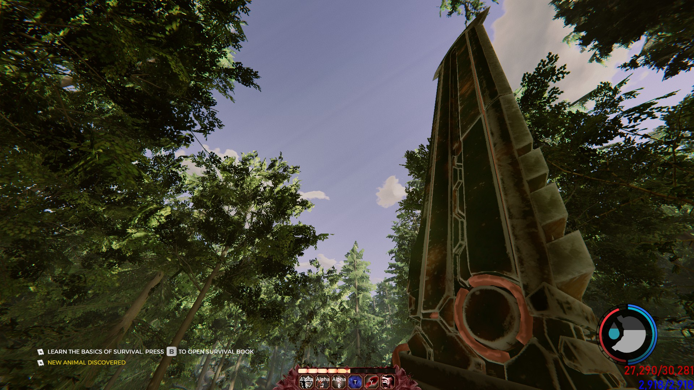
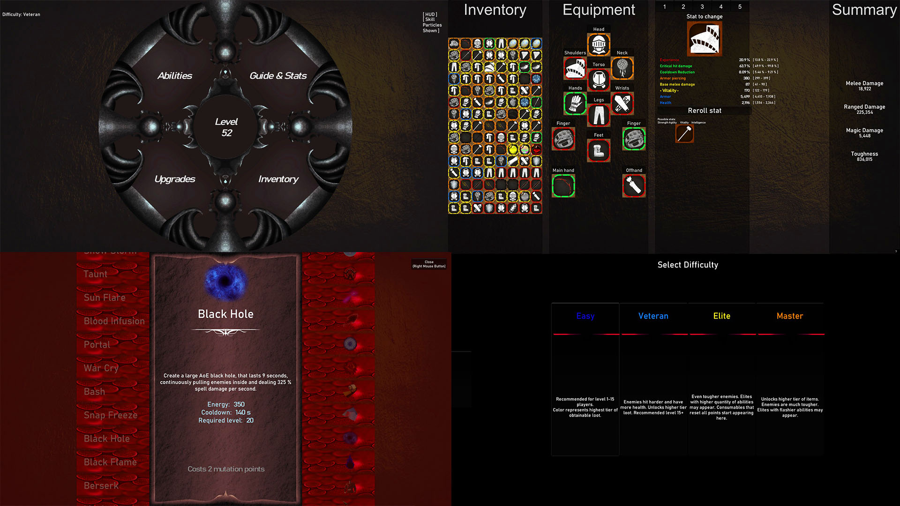
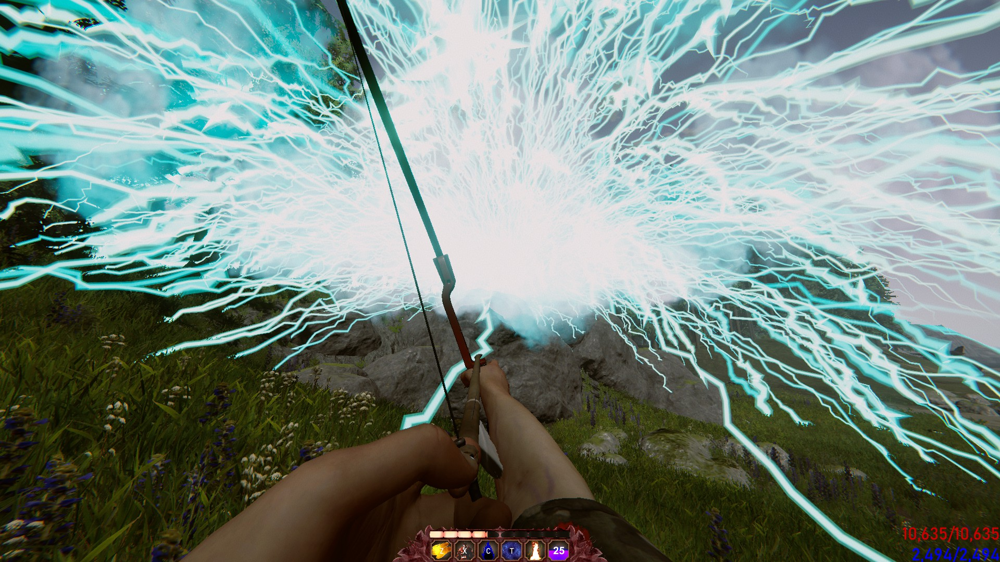
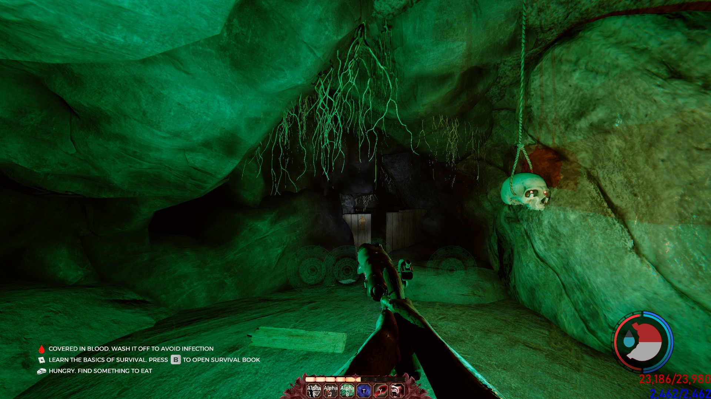
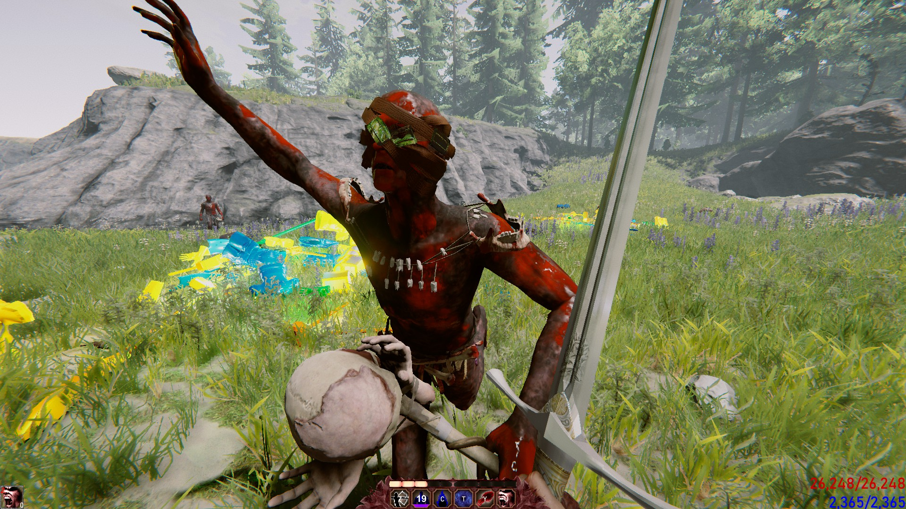
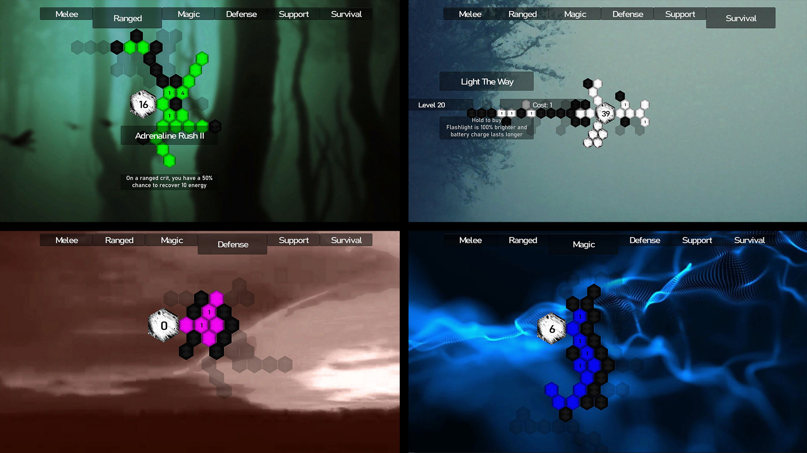
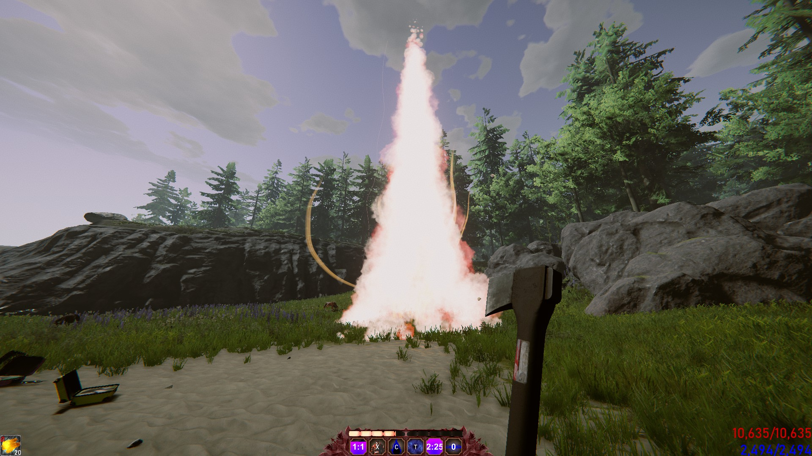

Welcome to Champions of The Forest
A mod that completely transformed The Forest from a survival horror game into an action RPG with progression systems, skill trees, loot, and multiplayer support.
This project taught me to work within severe constraints and build complex systems from scratch—skills that translate directly to professional game development.

Motivation
I wanted to create my own action RPG but lacked the experience to build one from scratch efficiently.
Modding offered a better learning path: a solid foundation to build on, professional code to study, and an active community for support. It accelerated my learning significantly.

Gameplay Mechanics
Players customize builds through skill trees and equipment with stats. Multiple difficulty tiers scale enemies and rewards.
I implemented RPG archetypes (melee, ranged, mage, support) with distinct playstyles. Added spell casting, buffs, debuffs, and status effects—which required rewriting the AI's aggression and targeting systems since the base game wasn't designed for these mechanics.
The result: enough build variety and endgame content to bring back veteran players who'd exhausted the original game.

Technical Challenges
Everything was built in raw code with zero access to Unity's editor. No drag-and-drop, no visual preview, no play-mode testing.
I built custom pipelines to load 3D models, textures, and audio files. Created dev tools including a skill tree visualizer and build automation scripts.
The multiplayer implementation was particularly creative: I hijacked the in-game chat system to sync abilities and effects between modded players, encoding game data as chat messages from fake users. Unconventional, but it worked perfectly.

Art and Design
Created almost all visual assets using Blender and Photoshop. Designed new UI layouts, icons, and visual effects entirely through code.

Key Learnings
This multi-year project taught me engine architecture, gameplay programming, and system design. I learned to extend systems beyond their original purpose, build development tools from scratch, and create engaging long-term gameplay loops.
Working within extreme limitations forced creative problem-solving that's made me a stronger developer overall.

Results
The mod became one of the most downloaded and feature-rich mods for The Forest, with an active player community.
Looking back at the code now, I can see clear progression in my skills—a testament to continued learning through professional work and education.

Open Source
The entire project is open source and available on GitHub, containing over 40,000 lines of C# code.
This includes custom gameplay systems, AI modifications, networking solutions, UI frameworks, and development tools.